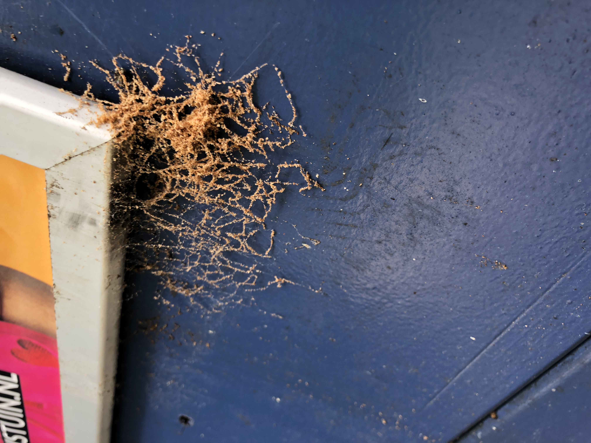
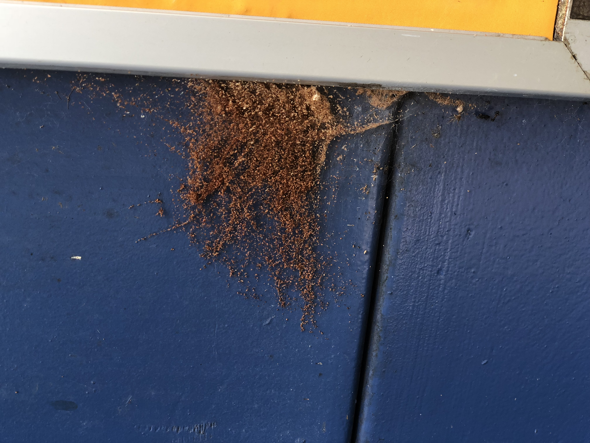
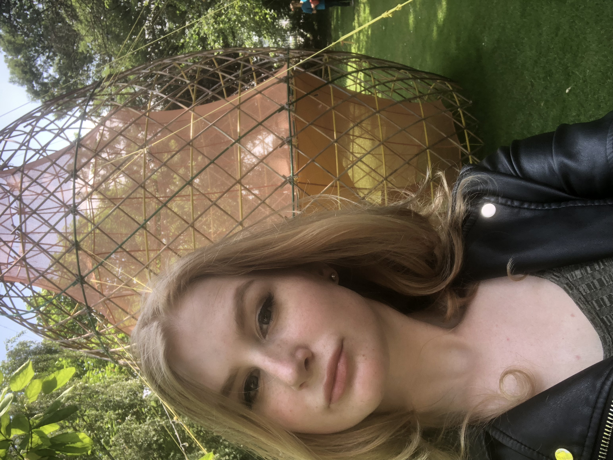
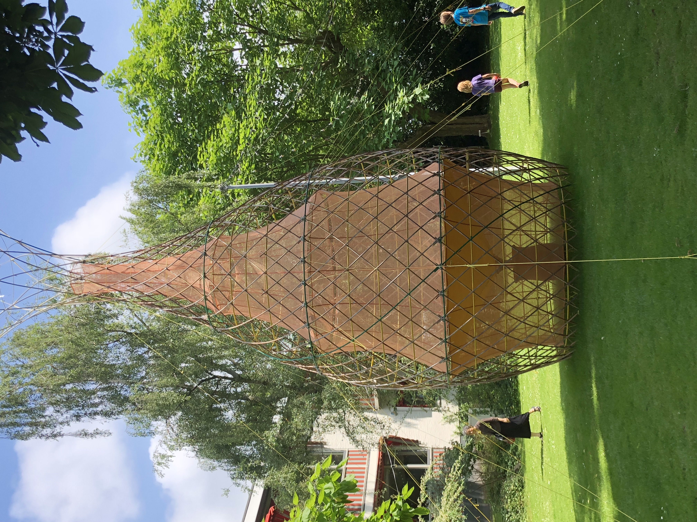

Excursie
Op 10 juni ben ik naar het Tolhuis in Amsterdam gereisd om exhibition Robotanica te gaan als opdracht van het vak HCI. Toen ik daar was vond ik het gelijk heel erg mooi. Ik was wel een beetje ziek, maar dat kon de mooie tuin niet derven. We moesten een kunstwerk kiezen en daar wat over vertellen. Mijn kunstwerk wat ik heb gekozen is de Warka Water van Arturo Vittori. Het sprak mij aan, omdat het gaat om overleven. Sommige dieren en planten maken namelijk gebruik van micro en nanostructuren op hun oppervlak om water uit de lucht te halen als ze dit moeten doen om te overleven. Dit vind ik zo mooi. Het is daarom ook geïnspireerd op bijvoorbeeld spinnenwebben en anderen dieren die zo vocht uit de lucht halen. Toen een spinnenweb zag (ik ben als de dood voor spinnen), wist ik het zeker dat Warka Water het moest zijn. Ondanks dat ik vreselijk bang was voor spinnen, deed de beschrijving van het kunstwerk mij anders laten denken. Dat ze misschien niet zo eng zijn als je zou denken, maar dat ze gewoon willen overleven.


Warka Water wordt gebruikt als een alternatief voor een waterbron voor droge gebieden. Het maakt gebruik van zwaartekracht, condens en verdamping. Het wordt niet alleen gebruikt voor een waterbron, maar het is ook een ontmoetingsplek. Door deze combinatie van natuur, overleven en sociaal gedrag, heb ik voor Warka Water gekozen. Het idee vond ik nogmaals heel erg mooi om mens en natuur samen te laten werken en om te kijken hoe beesten overleven en dit gebruiken om zelf te overleven. Ook vond ik het overleven wel bij mij passen en daarom sprak het mij nog meer aan. De artiest, Arturo Vittori, is een Italiaanse kunstenaar, architect en hij is een industrieel designer. Hij de cofounder van Warka Water NGO en hij directeur van de design studie Architecture and Vision.

